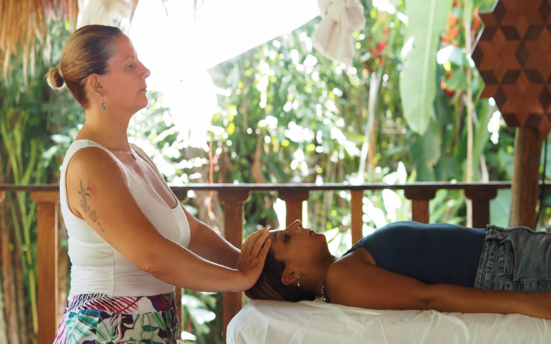

Durante tres años trabajé en el Hotel Vital Royal en Seefeld, bajo la supervisión de médicos con un enfoque holístico. Esta experiencia me enseñó a ver el cuerpo como un todo y, sobre todo, a escuchar a cada persona más allá de sus síntomas. Mi camino me llevó a Tailandia, donde profundicé en la práctica del masaje tailandés. En el año 2000 conocí a mi maestra de Reiki, Despina Tzatarma, un encuentro que abrió una nueva dimensión en mi camino de conciencia y energía./p>
Entre 2000 y 2008 viví en Italia, cerca del Lago de Garda, donde nacieron mis hijos, Leo (2004) y Gabri (2007). En 2003 viajé a Kerala, India, donde fui introducida al Ayurveda y a una antigua perspectiva sobre el equilibrio entre cuerpo, mente y naturaleza. Con los años continué ampliando mi formación, incluyendo terapia craneosacral con Dan Springer. En 2021 me convertí en Maestra de Reiki certificada bajo la guía de Julie Hickey. En 2002 recibí mi certificación de Reiki Nivel II en Puerto Viejo, un lugar que eventualmente se convertiría en mi hogar. En 2015 me gradué de una Escuela de Metafísica en Puerto Viejo, profundizando aún más en el estudio de la conciencia, la energía y la espiritualidad.
Hoy integro todo este recorrido en mi trabajo, combinando masaje, reflexología, drenaje linfático, masaje de tejido profundo, masaje tailandés, terapia craneosacral, Reiki, Ayurveda, metafísica y sanación con sonido. Sin embargo, más allá de las técnicas, mi trabajo está arraigado en la presencia, la intuición y la escucha profunda.
Creo que el cuerpo tiene su propio lenguaje. Cuando creamos un espacio seguro para pausar, respirar y escucharnos, podemos comenzar a reconectar con nuestra capacidad innata de equilibrio y bienestar. Después de casi tres décadas de aprendizaje, siento que la vida misma ha sido mi mayor maestra, abarcando cada lugar, encuentro, experiencia y persona que ha formado parte de este camino. Rosario Lill Herrle
WhatsApp Rosario